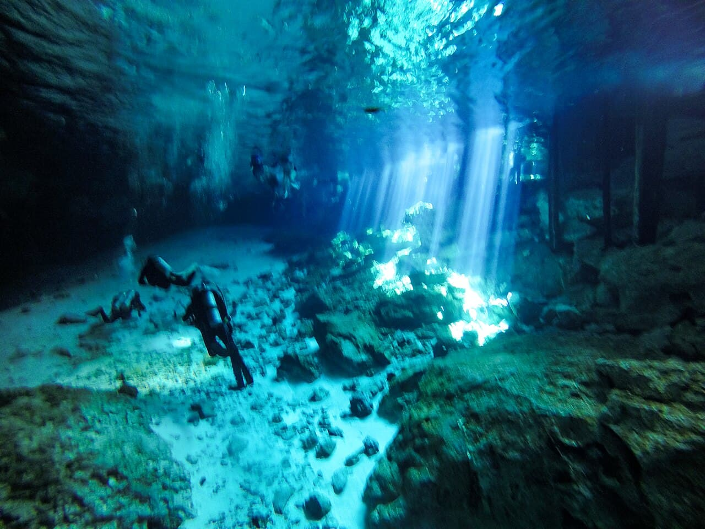

Cenote Dos Ojos
Tulum, Mexique · plongée, snorkeling, baignade

Cénote d’eau douce cristalline relié à un réseau de grottes, idéal pour le snorkeling et la plongée souterraine encadrée.
- Lieu
- Tulum, Mexique
- Niveau
- Débutant
- Activités
- plongée, snorkeling, baignade
- Type d'eau
- inland
- Coordonnées
- 20.33, -87.39 (position approximative du secteur)
Dangers à connaître
- Plongée souterraine = brevet spéléo strict.
- Eau fraîche, prévois une combinaison.
Le conseil d'Ocean Buddy
Pour le snorkeling, reste dans la zone éclairée (les 'ojos').
Ouvrir dans Ocean Buddy Télécharger sur l'App Store
Source : Description historique Ocean Buddy · vérification externe en attente.